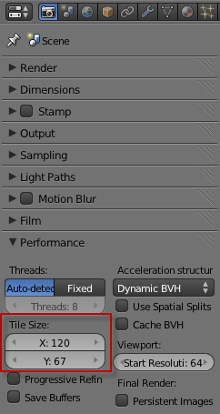
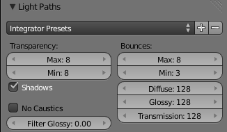
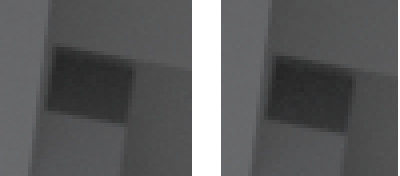
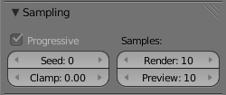
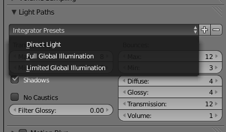
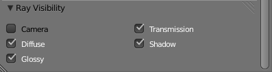

1. Renderizar com GPU. Geralmente, renderizar em GPU é mais rápido do que em CPU.
2. Desativar as opções "Caustics" (Render Panel, opções de Light Paths): para obter menos noise quando utiliza shaders de tipo Glossy/Glass. Mais informações e soluções no texto Cycles.
3. Utilize o "Filter Glossy" (Render Panel, opções de Light Paths): permite fazer blur aos reflexos do glossy. Reduz exatidão/correção mas pode reduzir o noise. Mais informações e soluções no texto Cycles.
4. Modificar Tile Size (Render Panel, opções de Performance): de acordo com alguns testes, aparentemente os melhores Tile Sizes são 256x256 para GPU e 16x16 CPU. No entanto, isto pode variar com complexidade das cenas e caraterísticas do computador. Utilize sempre múltiplos de 2.
Esta alteração não tem impacto na qualidade final da imagem. A imagem abaixo (foi redimensionada e convertida para jpg) foi renderizada com...
5. Reduzir número de Bounces (Render Panel, opções de Light Paths): raramente é preciso mais do que 4 (Min: 0 e Max: 4)
Esta alteração tem impacto na qualidade final da imagem. A imagem apresentada no ponto anterior também foi renderizada com...
Em visão normal, as diferenças são quase invisíveis. É preciso fazer um Zoom muito aproximado (canto inferior direito da imagem), sobretudo nas zonas com sombras, para encontrar diferenças. A imagem da esquerda usou Bounces: 3 (min) e 12 (max).
6. Reduzir as Samples implica perder qualidade mas também aumenta a rapidez. Não existe um número mágico, depende de cada caso/cena. Não obstante, recomenda-se que teste vários valores. Não são raros os casos em que depois de esperar várias horas por uma imagem com 5000 samples descobre que pouca diferença existe para versão de 2000 samples...
7. Utilizar "Clamp" (Render Panel, opções de Sampling): para eliminar os fireflies (pirilampos / pixels brilhantes) sem aumentar as samples (e demorando mais tempo). Não utilize valores abaixo de 1 ou 2 porque elimina demasiado contraste. Mais informações e soluções no texto Cycles.
8. Utilize Shader Colors sem valores 1.0 ou perto disso. Tente não ultrapassar o 0.8 e tornar as luzes mais brilhantes.
9. Experimente utilizar o preset Limited Global Illumination.
10. Se utilizar Mesh com Emission e a luz for muito brilhante, talvez seja útil ativar opção “Sampled as a Lamp”. O World Background também tem esta opção, sobretudo útil se tiver Environment Maps com pontos brilhantes de reduzida dimensão.
11. Janelas de Luz: quando renderizar uma cena interior diurna e tem luz que vem através de uma janela ou porta é muito recomendável utilizar um plano com Emission no lugar da abertura. Para este plano não ser renderizado e tapar a janela ou porta, pode desativar a sua visibilidade.
12. O Progressive Render não acelera a renderização mas pode permitir poupar bastante tempo ao evitar renderizar até ao fim a imagem. Mais detalhes no texto Cycles.